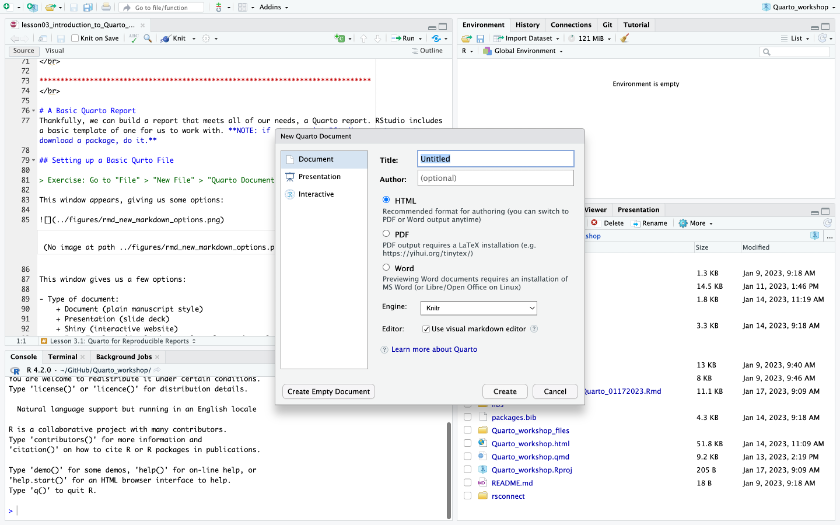
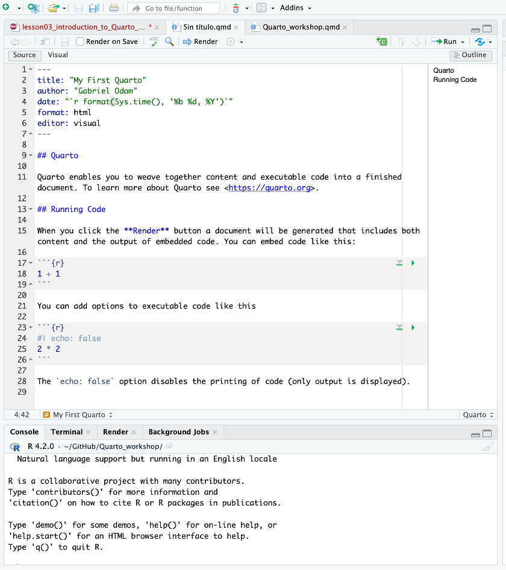
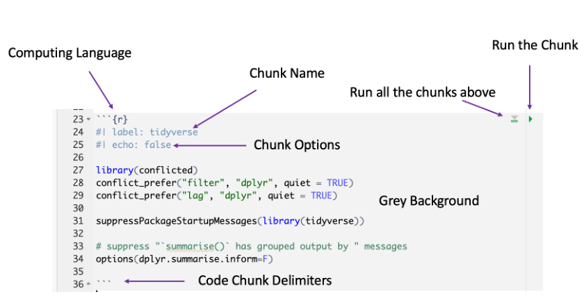
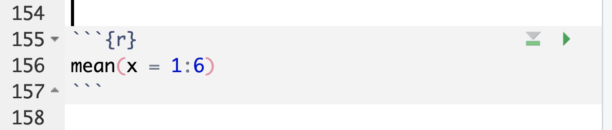
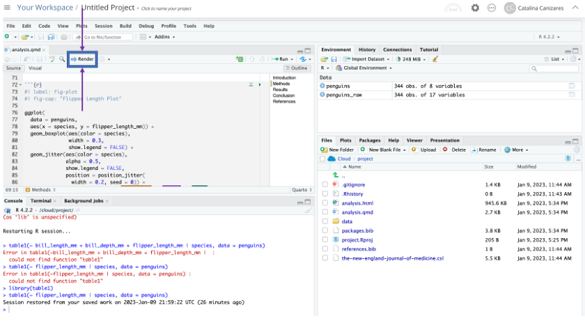
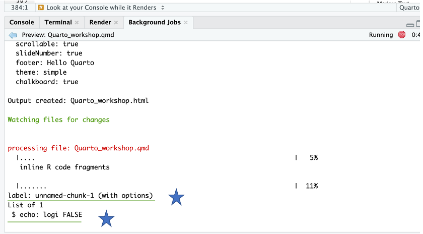
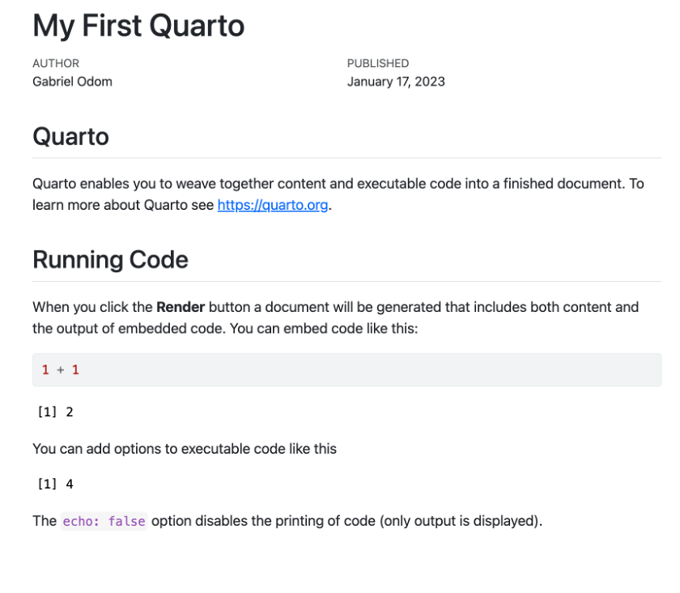
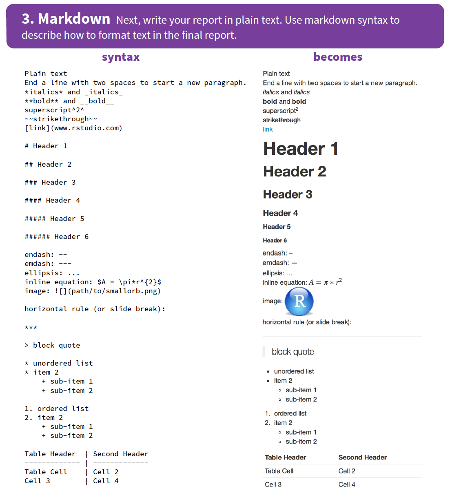

Lesson 3: Quarto for Reproducible Reports
Review
What did we learn last class?
- Everything in R is an Object. Objects are baskets that are labelled and hold values. We learned about objects that contain character, numeric, or logical information, among other things.
- Create new objects with
containerName <- valuesyntax. - R is a vectorised language: it treats single values as part of a larger set.
- Use functions with
functionName(argumentName = argumentValue)syntax. - Get help with
?or Google.
Overview
We will cover the following:
- Why we need reproducible reporting
- Installing Packages
- A Basic Quarto Document
- Code Chunks and Output
- Annotating your Work
- Formatting you Annotations
Reproducible Reports
We previously saw how we can use R scripts to save our code and code comments. However, these scripts do not actually save or show the results. You still have to run the code. This isn’t particularly helpful to most people. We need a way to include
- The background for the project
- A description of the model we used, and theoretical justification (if necessary)
- The code to run the model
- The output of the model
- Our explination and discussion of the output.
Of these needs, the only thing that R scripts do very well is to hold the code of the model. Through code comments, we could sketch out some of the other components, but never at the level of detail necessary for a technical report. This is far more complex than a simple R script can handle!
Intalling Packages
Before we move on to creating our first reports with R, we need to understand a critical component of the R language: packages. Packages are self-contained pieces of software that can be “added-on” to R, increasing the functionality available to you. If you have used MS Word or Excel, have probably heard about “Add-Ins”: additional pieces of the software that you can download to help you with a specific task. R packages are similar to this idea.
Google “r package for writing report”. Look through some of the links, and you should see something called knitr (pronounced “nitter” or “nit R”) mentioned a few times.
Now we know what package we want to use for reports, but how do we download it for R (or us) to use?
- Do you remember the syntax we used to find help files? Look for help related to the word “install”. When you type
installin the console, RStudio should give you a few predicted function options. One of those options will be what you need. Read the help files for these functions to be sure. - Once you have discovered the function to install packages for R, read about the first argument of this function (in the “Arguments” section of the help file). What R syntax do you use to make something a character vector? Use this function to install the
knitrpackage.
After we have installed the knitr package. It is available for R to use. However, if we want to use the package directly, we need to take one more step, called loading the library. We will cover this in the next lesson. For what we need to do today, simply having the package installed is enough.
A Basic Quarto Report
Thankfully, we can build a report that meets all of our needs, a Quarto report. RStudio includes a basic template of one for us to work with.
If at any point RStudio prompts you to download a package, do it.
Setting up a Basic Qurto File
Go to “File” > “New File” > “Quarto Document…”.
This window appears, giving us some options:

This window gives us a few options:
- Type of document:
- Document (plain manuscript style)
- Presentation (slide deck)
- Shiny (interactive website)
- From Template (download a template from a journal or major conference, and write your manuscript to their formatting specifications)
- Title and Author(s): if you are working in a group, this is where you add the names of your co-authors
- Output Format:
- HTML (the default). This is the recommended starting place for any document. I will show you how to change this output type for a document that you have already written. We will use this option now, as it is the easiest to learn.
- PDF (advanced). This output style requires that you have additional advanced software installed, such as Windows MiKTeX or MacOS MacTeX. If you plan to use LaTeX to write your PhD dissertation, then you should learn how to use these tools; otherwise, avoid this option. Most people don’t need it.
- WORD (intermediate). This output style requires you to have MS Word installed on your computer (most people do). We will use this option for our reports later in the semester.
Customise your title and author fields. Once you have finished your customization, click “OK”.
Inspecting your Quarto File
We should all see this basic Quarto template:

Let’s dive in to the structure and syntax of this document.
The Meta-Data Header
The first few lines of the document are the document header. These lines tell R crucial information about how to build your report. The entire header, and all of the document options in it, are bounded by the three horizontal dashes (---) above and below.
Currently our header is quite basic. It includes:
- The title of the document;
title: "My First Quarto" - Who wrote it:
author: "Gabriel Odom" - Today’s date:
date: "format(Sys.time(), '%b %d, %Y')"(this looks crazy, but don’t worry about it now; we will learn what this means later if we need to) - The output type:
format: html
Notice that each one of these options (other than the date) are directly filled by your choices in the previous window.
Code Chunks
The next thing we see is a code chunk. Code chunks look like this:

The components are:
- Computing language: Quarto documents can compile more than just R code, but we specify the language R here (with
r). - Chunk name: this part is not required, but it can be helpful if you have errors in your code to know where they come from.
- Chunk options: there are a few common options, which we will discuss later. This
echo=falseoption means that this code chunk will not be included in the report output. - Chunk delimiters: all code chunks start and end with three backticks (```). If you want code that will run in a certain language (which most of the time, we do), add
{}after the opening set of backtick delimiters, and put the language in first. For example, a basic code chunk could look like

- Chunk body: this is where you put the actual R code that you want to compute.
Notice two more things: 1) code chunks are on a grey background so they are easier to spot in the document, and 2) you can test the code in the chunk by clicking the green “Run Current Chunk” button on the top right.
Markup Text
Now that you have a report with a header and some code, you need to explain what your code is doing and why. This is where the plain text comes in. Outside of a code chunk, type anything you want. You can even include pictures and tables. We will discuss these options, and the text formatting options, later.
Save the report. Mac Users: make sure you add .qmd to the end of the file name.
Render your Report
Now that you have saved the Quarto file, you can “Render” your report.
Render your report. This may require you to install some packages, so click “OK” on the installation popup.

While your report is building, notice that the “Console” pane has a new tab called “Background Jobs”. If this tab isn’t already open, click on it. You should see the following (I’ve annotated some of the important components in blue):

Note that the names of the code chunks appear in this build report, as well as their options. Any text that doesn’t include R code to evaluate is labelled as “ordinary text without R code”. We can also see the progress in percent on the right side of the report.
Inspect the Final Product
Finally, we have a rendered report!

We can see how each of the components of the original .qmd file control the look of the report itself. We can see that the meta-data set the title, author, and date of the report. We can see how the typed text is formatted in the final report.
Compare the three code chunks and their options with what R code appears in the report. Can you explain what the code chunk options are doing?
Building your Own Report
Now that we have seen the basic report, we can modify it to our needs. Remember, this is how you will turn in homework and projects for the remainder of the R portion of this course.
The Quarto Guide
So that you don’t have to try to remember all of what we just covered in excruciating detail, there is a very handy website with all of the major points of today’s lesson: https://quarto.org/.
Including Code Chunks
To construct your own report, you will need to create your own code chunks. The keyboard shortcut for this is CTRL + Alt + I on Windows, CMD + Alt + I on Mac. This will insert a basic code chunk with the R language selected. From there, you can name your chunk, add chunk options, and include code for R to execute. For chunk options, see Section 5 of the cheat sheet.
Annotating your Work
Good code has good explanations. Whenever you write code, you should include explanations for why you are doing what you are doing. Good code should be readable, in the sense that someone who knows the language can look at the code and see what you are doing. However, no one but you knows exactly why you chose to do what you did in the way that you did it.
As will most textual explanation, we often need to organize it, format it, and add supplemental figures and tables to explain it. Here are the rules for formatting your report:

- Make a Quarto report to include some of your notes from the past few lectures. Include:
- code examples
- annotations for what you learned about the code you had to write
- an image of a meme that you find funny (look at the cheat sheet for how to include images) as a hyperlink
- Render your report as an
.htmldocument first, and check to see that your formatting is appropriate. - Also render your report as a Word document. Note the slight changes in formatting.
Congratulations! You are now well on your way to writing powerful and flexible scientific reports with Quarto.
Install the tidyverse package the same way you installed the knitr package above. (We need it for next class.)